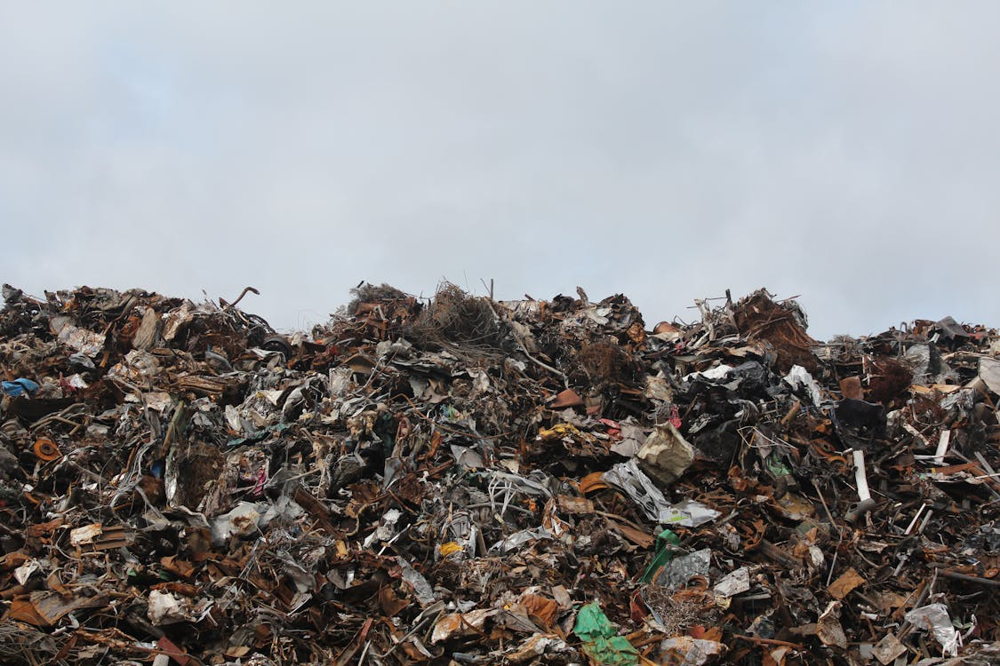

The Impact of Food Waste
Food waste has far-reaching effects that impact the environment, economy, and society. Every year, millions of tons of food are discarded, leading to various negative consequences that could otherwise be avoided. Understanding these effects is crucial in motivating actions to reduce food waste globally.
Environmental Impact
Food waste contributes to global warming, as wasted food often ends up in landfills, where it decomposes and releases methane—a potent greenhouse gas that contributes to climate change. Additionally, producing food that goes to waste requires vast resources, such as water, energy, and land, putting a strain on natural resources and harming biodiversity.
Economic Impact
Wasting food is also a waste of money. The cost of food waste adds up through production, transportation, and disposal costs. Businesses, especially those in the hospitality industry, suffer financial losses when food is discarded. Households too can reduce their expenses significantly by managing food waste more effectively.
Social Impact
On a societal level, food waste exacerbates hunger and food insecurity. With millions of people around the world lacking access to sufficient food, reducing food waste could help reallocate resources and feed those in need. It is essential for individuals and businesses alike to be mindful of food waste and take steps toward creating a more equitable society.